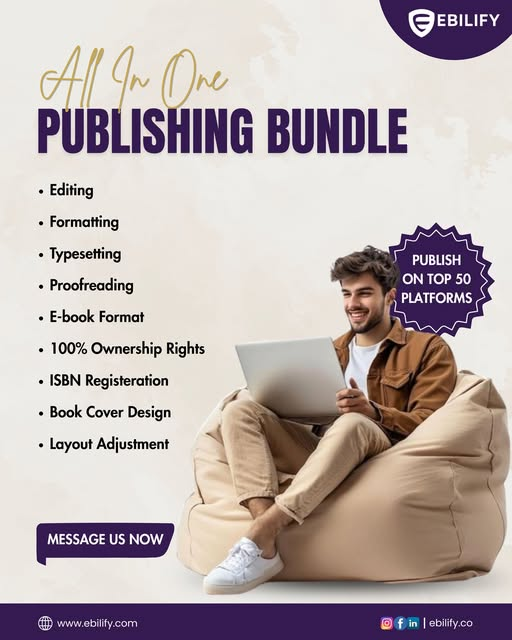
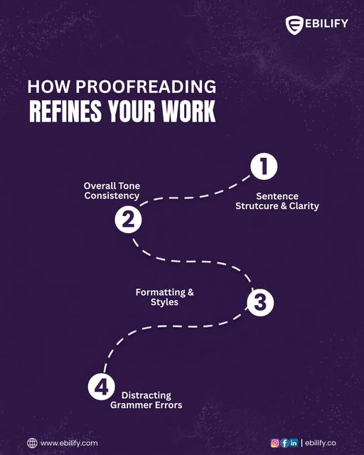

Projects delivered
Across digital, creative and business solutions.
Marketing, design, development and systems built around each client’s goals.
Across digital, creative and business solutions.
Success ratio.
Build · Grow · Brand · Scale.
Strategy, technology, marketing and brand.
From first foundations to sustainable scale.


Marketing, development and design services for a growing digital brand.
Marketing and creative design services to support the brand’s digital presence.
Marketing, creative design and ad management for a travel and tours brand.
CRM interface preview for managing incoming leads and follow-ups.
Concept for bringing client records, tasks and communication into one view.
Operations-focused CRM preview connecting work stages and team handoffs.
CRM reporting preview for a clearer read on pipeline and customer activity.
Website direction for a service business focused on clarity and conversion.
Digital product website preview with an intuitive path to learn and enquire.
Website structure designed to make key services easy to understand and find.
Website preview pairing a distinct visual identity with a straightforward user journey.
CRM and website visuals are illustrative previews. Share the related client names and approved testimonial wording to replace these placeholders with verified case studies.
Thoughtful work, from the people who experienced it.
Working with Belic was a great experience. Their marketing and creative design services helped us strengthen our digital presence and present our brand in a much more professional and engaging way. The team understood our vision, communicated clearly, and delivered creative work that aligned perfectly with our brand. I would definitely recommend Belic to businesses looking to elevate their digital presence.
Belic has been a reliable partner in helping us build and grow our digital brand. Their marketing, development, and design work was creative, professional, and aligned with our vision. They understood what we needed and turned our ideas into a strong digital presence. The attention to detail and commitment to quality really stood out. I would highly recommend Belic to any growing brand looking for a team that can handle both creative and digital needs.
Working with Belic has been a great experience for our travel and tours brand. Their creative designs, marketing support, and ad management helped us present our services professionally and reach the right audience. The team was responsive, understood our requirements, and consistently delivered quality work. Belic has played an important role in improving our brand's digital presence, and I would highly recommend their services.
Whether you're starting from scratch, looking to grow, or preparing to scale — let's build the next stage of your business.